Once you have your desired cluster layout worked out, you might ask yourself how to build a complete rocket
using that layout. Specifically, how big should your fuel tanks be? The following is a tutorial to help with
this step. Click on the images for full sizes.
This tutorial uses only stock parts. You might want to consider using the
Stretchy Tanks
mod for resizable fuel tanks, making min-maxing much easier. It will also help to reduce part count.
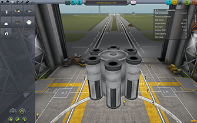
This is our desired payload with a mass of 45 t.
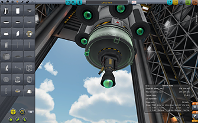
Attach a starting fuel tank. Then, according to the calculator, attach the center engine.
To attach outer engines, use Cubic Octagonal Struts.
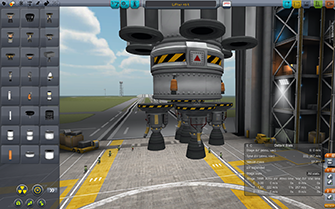
Attach all other engines. You might need to use part clipping here. It doesn't need to be perfect
just yet.
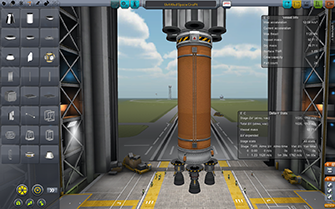
Now choose a combination of fuel tanks so that you get a TWR of about 1.23. This doesn't have to be
perfect. Other TWRs such as 1.4 work just fine, too.
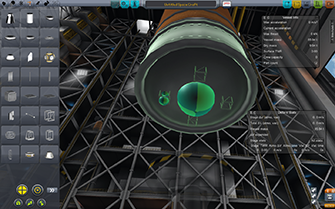
To attach the outer engines right below the fuel tank, use the Cubic Octagonal Struts again.
Rotate them so that they are facing in the upwards direction instead of the default downwards
(press S two times.)
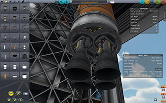
Attach the outer engines again.
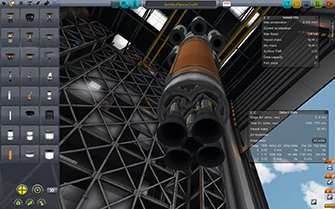
Attach the center engine again. Don't forget to attach the radial engines if your layout requires them.
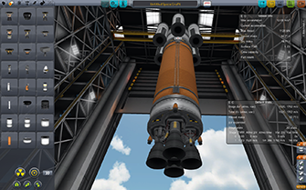
The completed center stack.
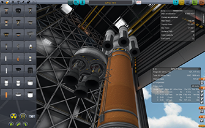
For the booster stacks, attach a starting fuel tank and engines.
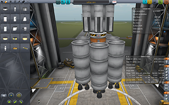
Detach the booster and reattach with symmetry. Then add more fuel tanks until you reach the
calculated total vessel mass (300 t in this example.) You can also rearrange the fuel tanks
so that a different tank is attached to the decoupler.
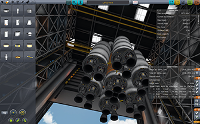
Add fuel lines for an asparagus-style staging.
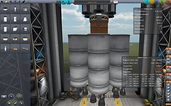
Rearrange the decouplers in the staging. Notice how the liftoff TWR should be just about what
the calculator suggested.
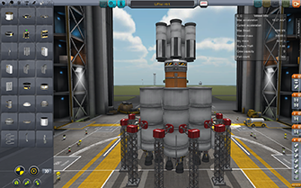
Add struts, winglets, launch clamps, batteries and sepratrons.
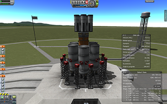
Before liftoff, make sure to disable all thrust vectoring on the booster stacks.
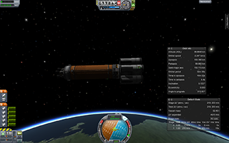
The final stage in a 100 km circular orbit, with more than enough fuel left for a deorbit burn.
{kind=link}
{kind=link}
{kind=link}
{kind=link}
{kind=link}
{kind=link}
{kind=link}
{kind=link}
{kind=link}
{kind=link}
{kind=link}
{kind=link}
{kind=link}
{kind=link}
{kind=link}
{kind=link}